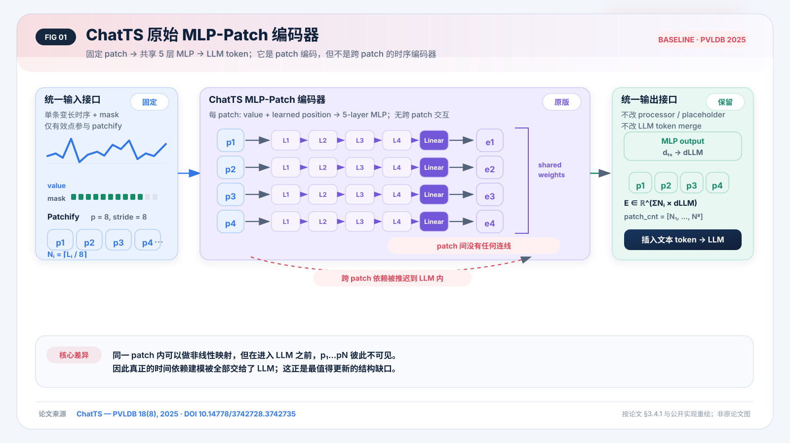
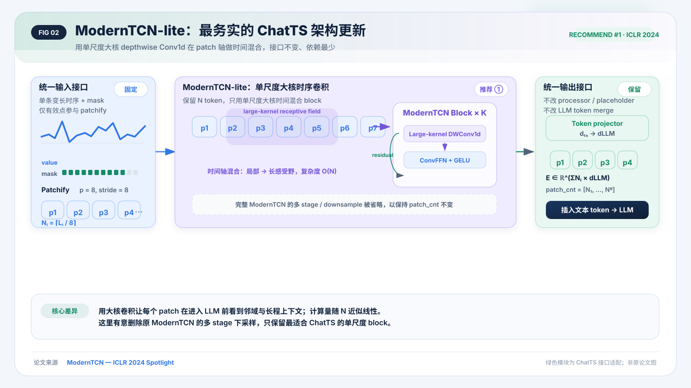
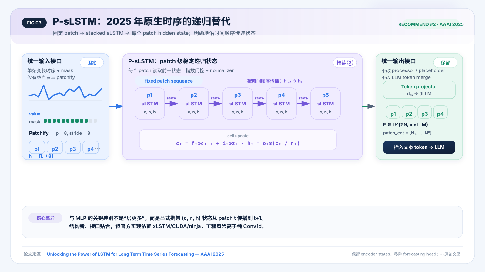
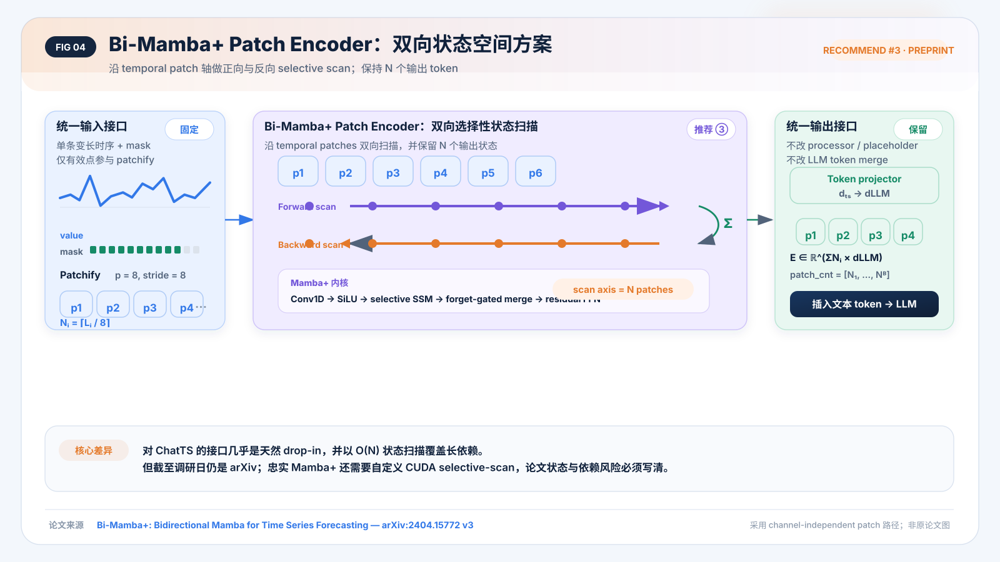
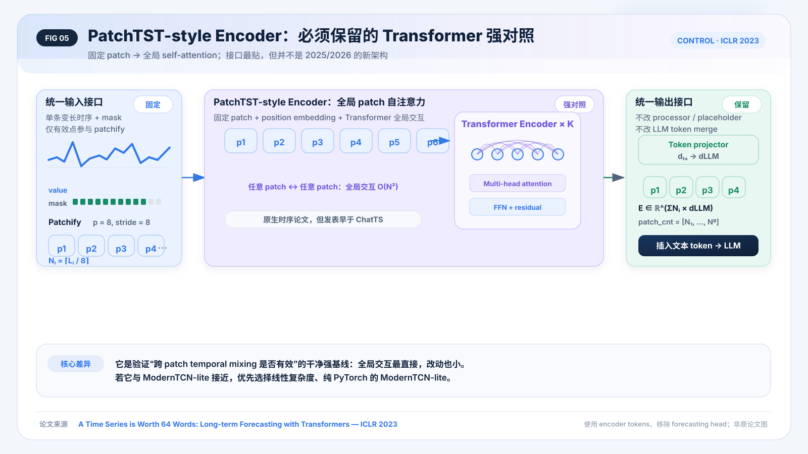
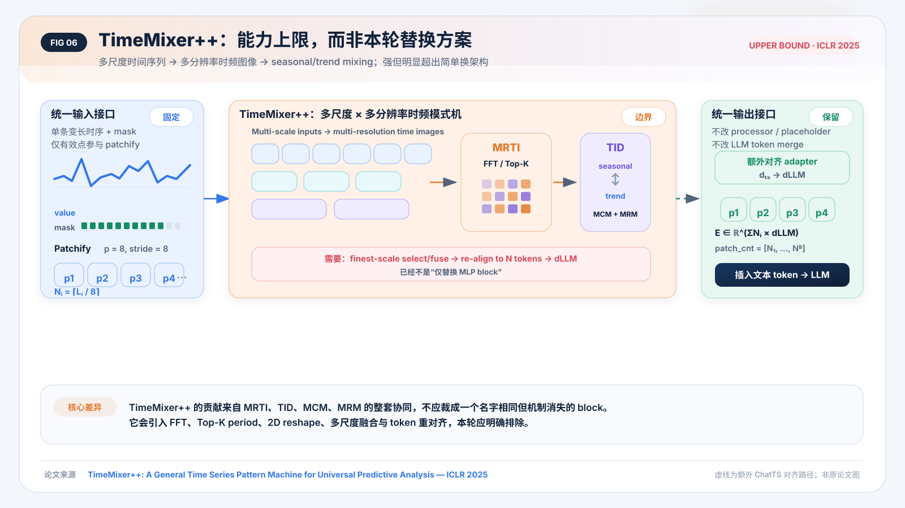
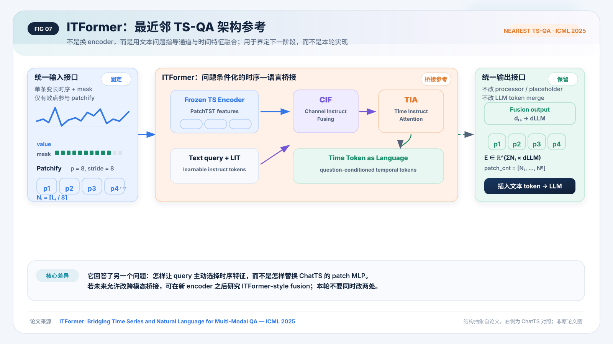

ChatTS Time Encoder
架构更新调研
目标不是堆复杂机制，而是在保持 patch、token 数与 LLM 接口不变的前提下，让时序在进入 LLM 前真正发生跨 patch 信息交换。
结论先行
ChatTS 的现有模块是时序输入的 patch 投影器，但不是显式跨 patch 的时序编码器。最合理的更新不是增加 MLP 层数，而是在 dts 的窄空间中加入一种清晰的 temporal mixer，再一次性投影到 dLLM。
| 排位 | 架构 | 时间信息流 | 保持 N token | 复杂度 | 状态 | 建议 |
|---|---|---|---|---|---|---|
| 1 | ModernTCN-lite | 大核 DWConv1d | 是 | 低 | ICLR 2024 Spotlight | 主方案 |
| 2 | P-sLSTM | patch 级递归状态 | 是 | 中 | AAAI 2025 | 现代替代 |
| 3 | Bi-Mamba+ | 双向 selective scan | 是 | 中高 | arXiv v3 | 高潜力/有风险 |
| C | PatchTST-style | 全局 self-attention | 是 | 低中 | ICLR 2023 | 必须对照 |
| — | TimeMixer++ | 多尺度时频混合 | 需额外对齐 | 高 | ICLR 2025 | 本轮排除 |
| — | ITFormer | 问题条件化融合 | 改融合接口 | 中高 | ICML 2025 | 下一阶段 |
01 · 先把 ChatTS 原版画清楚
ChatTS, PVLDB 2025 在 §3.4.1 明确使用 fixed-size patches 与每 patch 的 5-layer MLP。公开代码计算 Nᵢ=⌈Lᵢ/p⌉、对尾 patch 补值，再把所有 patch 独立送入共享 MLP，最后返回 features 与 patch_cnt。

02 · 推荐 ① ModernTCN-lite
它最贴合“只换架构、别搞复杂”的要求：用大核 depthwise Conv1d 在 patch 轴建模时间依赖，计算随 N 近似线性，且可用标准 PyTorch 实现。

Patchify(p=8) → Linear(p → d_ts=512) → [DWConv1d(k=7/9) → Norm → ConvFFN → Residual] × 4 → Linear(512 → d_LLM) → 原 token replacement
来源：ModernTCN — ICLR 2024 Spotlight。报告中的 lite 是明确适配，不是声称原论文使用了该精简结构。
03 · 推荐 ② P-sLSTM
P-sLSTM, AAAI 2025 是 fixed patch + channel-independent + stacked sLSTM 的原生时序结构。它和 MLP 最直观的差异，是每个 patch 都接收上一时刻的 (c,n,h) 状态。

04 · 推荐 ③ Bi-Mamba+ Patch Encoder
Bi-Mamba+ v3 的 channel-independent 路径沿 temporal patches 做正、反向 selective scan，输出仍是 N×d，接口几乎天然适合 ChatTS。

05 · 必须对照 PatchTST-style Encoder
PatchTST, ICLR 2023 与 ChatTS 的接口最贴。它不够新，却是回答“仅加入全局跨 patch interaction 是否已经足够”的最干净强基线。

06 · 两个边界：新，不等于适合现在做
TimeMixer++：能力上限
TimeMixer++, ICLR 2025 的优势来自 MRTI、TID、MCM、MRM 整套多尺度时频系统。接入 ChatTS 必须新增 FFT/Top-K、2D time image、尺度融合和 token 重对齐，已经不是“换掉几层 MLP”。

ITFormer：最近邻 TS-QA，但改的是桥接
ITFormer, ICML 2025 用文本 instruct tokens 指导 channel/time fusion，是正式发表的直接 TS-QA 最近邻。它适合下一阶段研究 cross-modal bridge；本轮同时改 encoder 和 bridge 会破坏归因。

07 · 最小、清楚、可归因的实验矩阵
ChatTS-MLP vs PatchTST-style vs ModernTCN-lite vs P-sLSTM (资源允许时再加 Bi-Mamba+)
全部固定 patch/stride=8、输出 Nᵢ=⌈Lᵢ/8⌉、d_ts、最终 projector、数据、训练步数、LLM、token replacement 与损失。不要让某个模型直接在 d_LLM 宽度堆很多层；先在 d_ts≈512 的窄空间建模，再投影一次。
08 · 证据包与边界声明
所有 SVG 均为根据论文与公开实现重新绘制的结构解释图，不复制原论文图。绿色模块表示 ChatTS-specific adaptation。报告没有编造候选在 ChatTS 上的准确率、延迟或参数结果。